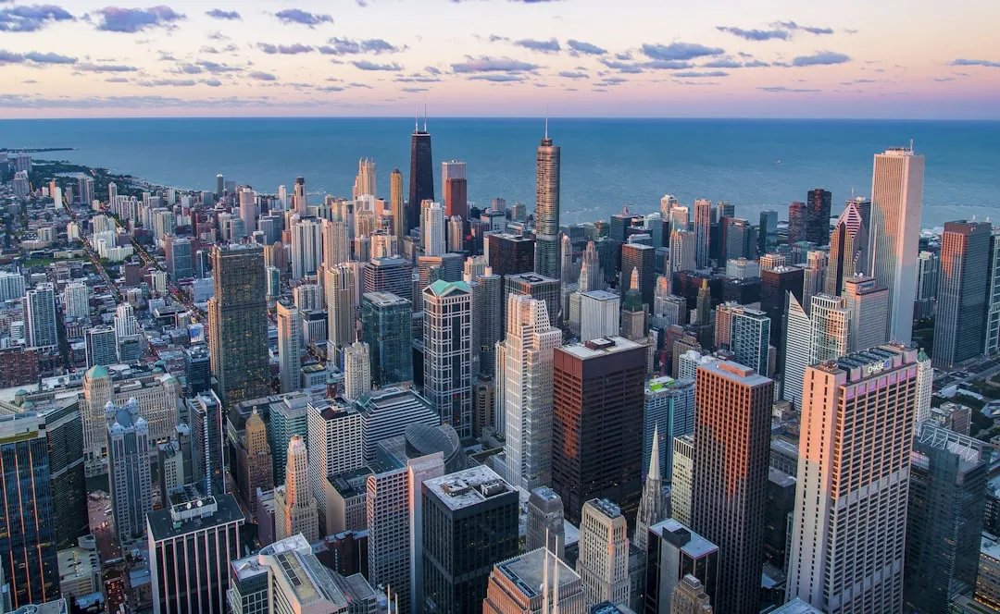

TCL Chinese Theatre: Hollywood's Historic Forecourt
· By GoldenPath Guide Editorial Team
Two blocks up Hollywood Boulevard, the ornate, vaguely East-Asian facade of the TCL Chinese Theatre holds the gaze of every passerby. Opened in 1927, it is one of the oldest landmarks Hollywood built for itself — and it is no mere relic: premieres and red-carpet events still happen here, making it a living museum of the movies. At dusk the facade glows warm against the street, and Hollywood Boulevard hums its usual restless soundtrack around it.
The Forecourt of Stars
The plaza ringing the theatre holds more than 200 handprints and footprints from famous performers — Marilyn Monroe, Tom Hanks, Frank Sinatra, Mariah Carey, and Jackie Chan among them. Just walking the concrete, each print still carrying the star's handwritten signature and message — the stone smoothed and warmed by a thousand passing hands — is enough to set your pulse racing. The forecourt is always busy, but the prints are free to admire up close.
An Opulent Beginning
Showman Sid Grauman built the theatre in 1925. The first nail was driven by Anna May Wong, Hollywood's first Chinese-American movie star. The first red-carpet premiere, 1927's King of Kings, reportedly drew a crowd of 50,000 people. Since then, The Wizard of Oz, the original Star Wars, and the Iron Man premiere (2008) have all held their world debuts here. In 2013 the venue took on the name TCL (The Creative Life).
The Legend of the Handprints
The tradition has a delightful origin story. Silent-screen star Norma Talmadge accidentally stepped into wet concrete during construction, and Grauman, seeing her footprint, had a marketing brainstorm. Mary Pickford and Douglas Fairbanks officially left the first prints shortly after. The variety is part of the charm: Marilyn Monroe left a stiletto heel mark, John Wayne a cowboy boot print, and R2-D2 its little wheel tracks.
A Working Theatre & Surroundings
The theatre is still showing movies. Its main auditorium has 932 seats and a large IMAX screen measuring 94 × 46 feet. A VIP tour offers a peek behind the golden doors, so book one if you can. Around it, Hollywood's golden age is still alive: the storied Musso & Frank Grill (serving since 1919), the glamorous Roosevelt Hotel, and a busy, hidden bowling bar tucked underground.
Tour Times, Tickets and Premiere Nights
The behind-the-scenes walking tour runs daily roughly every 30 minutes from late morning through early evening, charging about $15 to $20 for the 30-minute loop through the historic auditorium, projection booth stories and costume displays — buy at the box office, since online resellers mark it up. Showtimes for current releases run in the main auditorium with standard multiplex pricing ($18 to $25); the IMAX laser-projection screen ranks among the largest in the country. Premiere nights close the forecourt to the public — check the theatre's event calendar before visiting, since 6 to 10 red-carpet closures happen yearly, mostly spring through fall. Costumed characters work the boulevard for tips ($5 to $10 per photo is the norm); agree on the price before posing. The Dolby Theatre tours next door ($20-plus) pair into a two-hour Hollywood-morning combo.
Forecourt Stars and Photo Strategy
Nearly 200 handprints, footprints and signatures fill the forecourt concrete, from 1927's first impressions to current Marvel casts. The historic prints (Monroe, Gable, the Marx Brothers' cigar) cluster near the entrance; newer stars spread toward the street. The Marilyn Monroe slab and the Harry Potter trio draw the longest phone-photo lines — shoot those before 10 a.m. when the courtyard opens relatively empty. Midday crowds peak 11 a.m. to 4 p.m.; the low-angle late-afternoon light after 4 p.m. photographs the terrazzo best. The theatre staff chalk-map of star locations (free at the box office) saves 20 minutes of wandering. Touching is allowed and expected — the worn noses on the famous prints prove it. Skip the forecourt entirely during premiere lockdowns; the stars next door on the Walk of Fame stay accessible and uncrowded by comparison.
Hollywood Boulevard: Nearby Stops and Safety
Build the two-hour boulevard loop outward from the theatre. The Hollywood & Highland complex (renamed Ovation) holds the courtyard viewpoints framing the Hollywood Sign — free, and the best sign photo without hiking. The Walk of Fame's key blocks run east to Vine and west to La Brea; the 15-block full length takes 90 minutes to walk. Musso & Frank Grill (est. 1919) serves the old-Hollywood lunch — martinis and prime rib plates at $30 to $50 — with reservations smart on weekends. The Hollywood Museum in the historic Max Factor building ($15) holds the Hannibal Lecter cell and genre-makeup exhibits. Parking in the Ovation garage runs $20-plus with validation from merchants; the Metro Red Line's Hollywood/Highland station exits at the door for under $2. Stick to the main boulevard after dark, keep phones pocketed at crossings and skip the alley shortcuts — the parallel streets stay quieter than visitors expect.